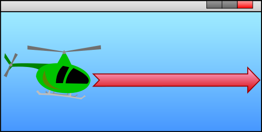
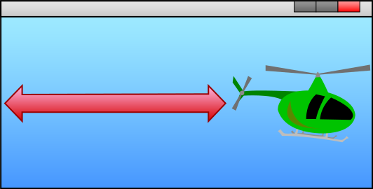
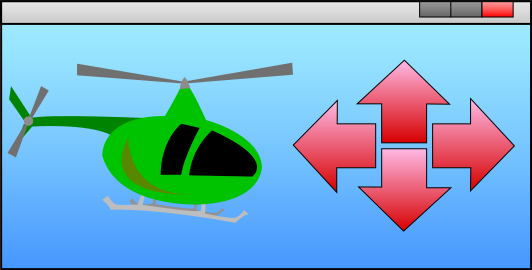
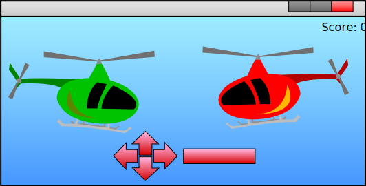
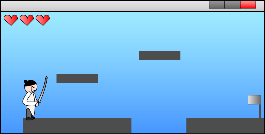

Abstract programming
You now know the core mechanics behind game programming: A game loop ensuring user interaction and manipulating graphics, an how to work with graphics at an abstract level. Now comes the fun stuff! It is time to do some abstract programming, where you have to plan and think the solutions. Why is this useful? You can use abstract programming and brainstorming to figure out what needs to be done programmatically in order to achieve the specific functionality you're looking for in your games. It is a tool to use when you have a brilliant idea, but currently no clue on how to get there. Let's start with a simple exercise!
Exercise 1 - moving a helicopter
I recommend that you actually do these exercises rather then skipping right to the solutions. You won't become an independent abstract programmer nor solution finder if you don't practice! You can build on the A4 paper example used earlier as a tool to solve these exercises, as it gives a more visual feel. Also, imagine that we use the same coordinate system as Adobe Flash which was described earlier.
You are in this exercise supposed to use your newly required knowledge to figure out how to move this chopper out of the screen. Imagine that you already have a Context with a chopper loaded in a object space and that is placed on the screen - see the illustration below. Now, when this "game" is launched, the chopper should move against the right and eventually out of the screen. In this case, it is OK to address coordinates outside the window. Now how would you do it? Solution is below the image.

Solution:
Set up a game loop. The game loop should modify the chopper object's coordinates in the Context (translation) to move a little (for example 5px) to the right for every iteration (frame). Some technologies will require that you perform a redraw (render call) to update the screen, while others do this for you. How fast it will move will depend on the processor (CPU) which means that its speed will vary from machine to machine. This can easily be solved by moving it x * DeltaTime pixels to the right instead of a constant value. DeltaTime is the calculated elapsed time since last frame.
Exercise 2 - simple collision detection
This exercise is a bit more difficult and builds on the previous solution. Now you want to change direction of the chopper when it hits one of the walls. How do you solve that? The chopper's start position is the same as in the previous exercise.

Solution:
First off all, we need a variable to determine its direction. This should be declared outside of the game loop. It could be a boolean called isMovingRight and could initially be set to true as the chopper starts at the left. Next, enter the game loop and add an if-condition that checks the variable. Increment x if it moves right, decrease x if it doesn't (moves left).
We will now need to add code to check whether the chopper is touching a wall or not. Yes, it is in the game loop after the movement, and yes it needs to be checked every frame. We can start off with the easiest one, which is the left screen. Check if the chopper object's x coordinate is smaller than or equal to 0. If it is true, it is either touching the wall or has been moved slightly outside the screen. The latter is more common when working with DeltaTime, rather than constant values. If it is true, change its x coordinate to zero, in case its outside, and change the isMovingRight variable to true.
Finally we need to add a check for the right wall and this is a bit trickier. If you don't think much about it, you would probably say that it is sufficient to check if the chopper object's x coordinate is greater than the Context's width, but is that really true? No, or, it depends entirely on what technology you want to use, but it won't work in most technologies, including Flash, where the object's coordinates are referencing to the very top-left corner of the object space. This means that our if-statement wouldn't trigger before the chopper actually had left the right of our screen. So how do we solve it? We need to add the chopper's (object space) width to the calculation; if ((chopper.x + chopper.width) >= context.width). If it is, change it's x coordinate to the Context's width minus the chopper's width (in case it is outside), and change the isMovingRight variable to false. Do an eventual render call to update the screen if necessary (after the if-test).
Exercise 3 - User input
Now imagine going back to scratch. You just realized that an automated moving chopper isn't really what you needed for it to be a game. You want to interact with the player! Ditch the first part of the game loop from the previous exercise and keep the wall collision detection. How do you make it move to the correct direction when the user presses one of the arrow keys? You can imagine that the input checking is done for you and you just need to check whether a specific key has been pressed or not.

Solution:
At the beginning of the game loop, ask the API, which is a set of calls (functions) to the Virtual Machine, or Game Engine for a list of keys that has been pressed since the last frame. For each of the four input keys, check if that key resides within the list. Some APIs allow this to be done with events instead and the only difference is that the following modifications are made inside the event handlers instead of directly n the game loop. This is not ideal for games, more on that in the abstract input chapter.
In the game loop, check for the following occurrences. If arrow up, decrease the y coordinate of the chopper's object space in the Context. Remember, in our (Adobe Flash's) coordinate system, the y coordinate is reversed. If arrow down, increase the y coordinate of the chopper object. If arrow left, decrease the chopper object's x coordinate. If arrow right, increase the chopper object's coordinate. Re-render each frame if necessary.
It could also be wise to add a collision detection similar to the already existing one, but on the y coordinate instead. In this way, the player won't be able to leave the bottom or top of the screen.
At the start of this solution I shortly mentioned APIs. It is usually a set of pre-made and also often OS independent libraries of functionality that makes low-level tasks, like retrieving user input, much easier for the developer! This often also includes the graphics and rendering system. You should ideally never write such functionality yourself, unless you are a system/game engine programmer working on specific parts of the core system. The API is often a part of the Virtual Machine or Game Engine's core libraries. It provides the link between your game loop code and the final user output (window with graphics). Its main task is to allow you as a developer to focus entirely on the gameplay and not system specific tasks.
Exercise 4 - missile + score
Continue from the solution of the last exercise, and imagine that you are now to program an opponent in your game. Assume that graphics has been loaded which has been placed in a new object space that holds the enemy. The enemy is placed on the screen. It is OK for this exercise to say that it is a passive enemy, which means that it doesn't do anything except for being a static target. When the player presses space, a missile should be fired from the front of the player chopper and fly towards the enemy. The enemy should disappear when the missile hits him, and the score should be increased. A missile must also be removed on hit, or when it's outside of the screen. It is OK for the score to assume that you have some "magical" object that places the score on the screen and gets updated when you change the value. Multiple missiles should be supported; it means that the player should be able to press space multiple times allowing multiple missiles on the screen. To keep things simple, you have now removed the ability for vertical movement; the player is stuck at the same x coordinate.

Solution:First, as we are to support multiple missiles, we should probably have an Array or Array like container to hold a list of references to active missiles (object spaces). Declare this outside of the game loop. Let's name it missileList. We must also make sure to load the missile graphics before the game loop, and store a reference to it.
Add a new if-statement in the game-loop where you check user input. Check whether the user has pressed space. If true, create a new object space (missile object), add or copy (depending on the technology) the graphics into the missile object. Next is to place the missile in front of the chopper. Retrieve the chopper's coordinates, width and height. Set the missile object's x coordinate to the chopper's coordinate plus (+) the chopper's width. This will place it to the very right of the chopper. Set the missile object's y coordinate to the chopper's y coordinate plus half of the chopper's height, minus half of the missile's height; missile.y = chopper.y + ((chopper.width / 2) - missile.height). This will position the missile at the vertical center of the chopper. Finally, add the missile object to the missileList. It could also be wise here to add a cooldown feature, allowing missiles to be maximum at a rate of n ms to prevent instant creation. This comes in a later chapter.
Next, move out of the if-statement and add a loop, typically a for-loop that loops through every missile in the missileList. For each missile, increase it's x coordinate and check if it is outside the window (if (missile.x >= Context.width)) and if it collides with the enemy. If it is outside, remove it from the list and from the Context. Score should also be increased.
To check for enemy collision, check if the missile's x coordinate plus (+) its width is within the range of the enemy's x coordinate, and that the missile's x coordinate is smaller than the enemy's x coordinate plus (+) the enemy's width; if (((missile.x + missile.width) >= enemy.x) and (missile.x < (enemy.x + enemy.width))). If true, it is a positive vertical hit and you should do the same thing for the y axis and heights. This gives a rectangular collision scheme. More on that in the abstract collision detection chapter.
Exercise 5 - platformer
This final exercise leaves our chopper genre, and tries something completely different; a simple platformer. I've decided to call it The Samurai Guy. Look at the picture below for the initial start of the game. The goal is to move the player to the flag without falling off the screen. This time, absolutely nothing has been done for you. You must set it up and make it work, virtually and abstract of course.

Solution:
This solution is a bit less detailed than the previous ones, and thus more abstract. It is because it would primarily be a lot of repetition from the previous solutions, and you should now be able to do deeper levels of abstraction on your own. All the way down to the actual code implementation. Abstract programming also works in this way. Start at the most abstract level, like; "we need to check for collision detection in the game loop", all the way down to the actual code implementation (usually some if-test).
Start off before the game loop by loading the graphics, and create one object space for each one of them. The graphics representing the ground should be added to an Array or Array like container, let's call it platformList. Add all graphics to the Context. Create an integer variable called jumpTimer and initialize it to zero. Create another integer variable, set to 3, called health. Last, create a boolean variable called isInAir, set it to false.
Next, create the game loop, start off by checking user input. If the player has pressed the left or right arrow keys, move the player to either left or right by manipulating the x coordinate. When the player presses space, check if isInAir is false. If it is, set it to true and set jumpTimer to the number of milliseconds you want him to go upwards. This prevents jumping while in air.
After user input, check if the user is standing one one of the platforms. Yes, you will have to iterate through the list of platforms and check collisions against all of them. Make sure that the collision is registered above or on top of the platforms and not under, this to prevent strange behavior when the player hits a platform with his head. If a collision on top of a platform has occurred, set isInAir to false. If a collision happened underneath a platform, set jumpTimer to zero. If the player isn't near a platform, set isInAir to true and check jumpTimer. If it's greater than zero, move the player upwards (jumping) and decrease the timer by the elapsed time since last frame. If not, move the player down towards the ground (bottom of the screen).
The remaining thing to do check for collision with walls, the holes at the bottom of the screen, and with the flag. If the player hit the flag, a "You won" text or similar should appear. Decrease health, remove one of the hearts from the Context, and reposition the player at the start if (s)he hits one of the holes. That's basically it!
I know there are many other ways to achieve this functionality, including the use of velocity and other more dynamic principles, but those are advanced topics not suitable for this abstract introduction and are covered in later chapters.
Final words
Wow, that was one long session, but hopefully you've learned a lot! The goal is that when you delve into a technology of your choice, you will be able to use this knowledge for successful time planning and development of functionality. Do not be afraid if you didn't get it all, this chapter works very well as a reference for you to come back to when you've got some hands-on experience and need advice or to repeat some theory.
What's next? Find a technology/tool if you haven't already, learn what you need and start practising by making smaller games. You could for instance try to actually implement the exercises above. Online tutorials are OK to use, but you should also try to implement custom functionality or you won't learn much. Good starter technologies are FlashDevelop (or Adobe Flash) & ActionScript, Unity & JavaScript/C#, and HTML5 w/JavaScript.
Feel free to give comments, feedback or questions. I will be happy to read and repl